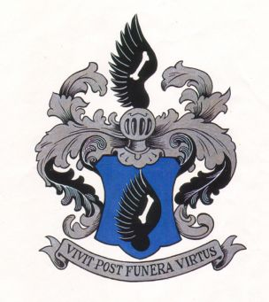

The oldest written sources of information about the Kübel
family are contained in the diary of Johann Ludwig Kübel, born 1644,
died 1707 at Heilbronn, Germany. This diary was continued by his
grandson Heinrich Franz Ludwig Kübel, tax collector at Heilbronn.
FAMILY COAT OF ARMS AND MOTTO

The family coat of arms as displayed by the Abbott Conrad zu Schönthal and as incorporated in his painting as well as in the one depicting the Hospital Vicar Philipp Friedrich Kübel consists of a black wing with 12 prongs, in the middle of the wing is a leg. The field is azure blue (ala nigra, in cujus medio os sive tibia cadaverica in campo caerulso).
The Motto of the family is: "Vivat post funera virtus", which was already accepted by the Abbott. The symbolism of the Abbott stated: "Fuge, tace, quiesce", which means Flee, be silent, rest, while a free translation of of the motto means: "The virtue of a man, i.e. what good he has created during his lifetime, continues to live after his death."
THE ORIGIN OF THE FAMILY
The Kübel family originated at Heilbronn. Jäger, in his History of Heilbronn and its surroundings, describes it as the oldest family of the City of Heilbronn. This
opinion is concurred in by D. Joh. Matth Faber's history of Heilbronn, and includes it within the most famous
families of the city.
Perhaps already during the year 1277 a Kübel possessed
a part of the last Federal lien, which during that year was
exchanged by King Rudolph with the Cloister Maulbrunn. While
during 1368 Maulbrunn having loaned this land to the City
of Heilbronn, a Heinss (sic) Kübel against an annual rental of
5 shillings, held a lien on a garden in the "Leimengruben",
this lien subsequently transferred to the city.
The nature of a lien would justify the assumption that it
remained within the family.
The first name of this Kübel
of the year 1277 may have been Albert (or Albrecht).
At any rate during the year 1284 - only seven years later -
one of this name donated to the Cloister Schönthal, a
vineyard which remained in the possession of the Cloister up to its dissolution.
Besides this one,
in the year 1294, a Konrad Kübel is mentioned - perhaps a
brother of the one mentioned above. He is mentioned as a
witness in documents of Schönthal. In the year 1311, Konrad
Kubel donated his possessions to the Cloisters Schönthal
and Obristenfeld and Albert Kübel donated a wine press to
the Cloister Schönthal.
It appears that Konrad and his sister Adelheid are children of
one of these two Kübels. Konrad and Adelheid took the
vows and donated to the Cloister Schönthal a farm located in
Heilbronn. More presumably they were children of Konrad Kübel
because he donated all of His holdings within the City of Heilbronn
to Cloister Schönthal and to the Cloister Obristenfeld
with the exception of his residence, which after their fathers
death was likewise donated to the Cloister by the two children.
Besides being pious and charitable by birth, no doubt they were
prompted in the actions by the fact that Konrad was an Abbott
at Schönthal while Adelheid was Abbott at Obristenfeld. His
reign at Schönthal appears not be solely successful.
In 1319 he submitted his resignation. He is buried within
the Cloister Schönthal and an oil painting adorns the
church.
The cloister records contain the following inscription
about him: "Postea Conradus venit ad sublima natus; fato est-correptus,
celestia gaudia adeptus."
It is quite evident that these two persons having lived under
the vows of chastity could not be the originators of subsequent
Kübel heirs and since their father, Conrad, already in the year 1311
has donated all of his possessions to the cloister, it should not
be assumed that he had any additional children. It is most probable
that with him and his children one branch of the family died
out and that the succeeding branch is descending from his brother
Albert (or Albrecht). Nothing can be ascertained with certainty,
and the assumption that Heinss (sic) Kübel, who was previously mentioned
during 1368 was lien holder of a Federal lien at the time of
transfer of a garden in the "Leimengrube towards the field", had been
a son of Albert, even so if probable, still it remains an assumption.
During the year 1431 we again find a Hans Kübelin,
(the diminutive "lin" instead of "lein" presumably because of his size) as
lessor of a city meadow and during the year 1450, a Hans Kübel,
presumably the same one, as usufructuary of the "rain im Rosenberg am
Neckar bis zum Kalkofen". Between the Heinss of the year 1368 and
the one mentioned above, there appears to be one generation lacking.
Wether the latter was already the owner of the "Kübelinswäldlein"
at the Weinsbergerweg as is still known today and which at that
time most probably covered a much larger area, we do not know for
certain. Perhaps the family name was derived from this little forest,
family names have been introduced during the 10th and 11th century
only.
Beginning with 1450 there is again a gap in the family register
which may have lasted for one generation. In prayer books of the
city of Heilbronn, the name Kübel appears quite frequently (especially
the name Hans Kübel) so during 1399, 1450, 1458, 1461, 1470, 1473,
1474, 1477, 1483, 1492, 1495, 1498, 1501, 1504, 1507, 1510, 1519.
Nothing but the name is known of these people.
According to a rent register of a church, a Hans Kübel during
1514 paid 3 guilders rent for a vineyard in the "Stauffenberg".
From 1526 until his death in 1544, he was member of the City Council,
finally in fourth position after the Mayor. He therefore
lived during the stirring times of the Reformation and the Peasant's
War. He was fortunate to endure the danger of the pest which raged
from 1491 to 1529 and which called for over 2,000 victims in Heilbronn.
A Hans Kübel, presumably the same one since he likewise is said
to have died during 1544, was married to a wife by name of Agnes and
who accepted the reformed evangelical teachings.
The FAMILY TREE
The names of those members of the family who have sired
the succeeding generation are typed in capital letters.
The uninterrupted succession of generations can only be
proven without a doubt beginning with STEPHAN KUBEL who presumably
was a grand-son of Hans Kübel who died in 1544.
STEPHAN KUBEL was a parson and died in Heilbronn in 1604. He is
therefore to be considered the originator of the Kübel family as
it exists today. Of his sister Susanna we know only the month
of her birth, March 1559.
II. Second generation.
Mag. GEORG KÜBEL, the son of the above mentioned, was
Parson at Kleiningersheim from 1625 to 1626. He was married
with Katharine, nee Renz from Bietigheim.
III. Third Generation
We can consider only his youngest son, STEPHAN KÜBEL, who was
born in 1604. l6l9 he learned how to write from city scribe
Wernher Feucht at Leonberg, 1622 he joined city scribe Luccejus
at Brackenheim, 1625 he joined city scribe Steglin at Waiblingen
and thereafter he became Assistant Court scribe at Leonberg. 1631
he became schoolteacher and Court scribe at Asperg. However,
because of illnes he had to resign in 1632. During 1656 he was
Court scribe at Oberrieringen. the clerical Administration of
Gröningën and he was assistant caretaker of the Lorch Administration.
On Juno 15, 1641 he became Hospital scribe, on July 28, 1642
he became a citizen of Heilbronn. He died on February 5, 1646.
He entered a second marriage with Anna Marie, widow
of Daniel Krauss, butcher at Heilbronn. Her father was Hans Drautz,
vintner at Heilbronn. Her mother was Klara, nee Klingler. After Stephan's
death, she entered into a third marriage with the tradesman Hans Loos.
IV. Fourth Generation.
JOHANN LUDWIG KÜBEL, was born June 17. 1644. For four years
he served as an apprentice with his step-father Hans Loos. For three
additional years he served with the merchant Emmerich at Strassburg,
until his mother,upon the death of his step-father recalled him to her own
enterprise, where he remained until his marriage.
His mother died September 8,1679,at the age of 75.
On May 16, 1678 he was elected a member of the Great Council,
on April 27, 1682, a member of the City Court, on September 1,
1691 he was accepted in the Inner Council and on August 4, 1698
he was elected Tax Administrator, He died on May 3, 1707.
He was first married with Marie Christine, daughter of the
City Court Assessor Philip Adam Pfeil of Heilbronn and Mario
Magdalene, nee Hofsess. She was born November 23. 1650, married
February 27, 1672 and she died February 16, 1700.
In accordance to the diary mentioned in the preamble,
started with his wedding day February 27, 1642, he submitted
to the oath as citizen on April 12, l672, performed his first
citizen watch on the 19th and had to serve his first serfdom
services on June 13, l672. On February 15, 1675 we find the
following entry: "Between 2 and 3 o'clock in the morning under the
sign of Gemini by the Grace of GOD she gave birth to a child".
At all of the later births he has always mentioned the Zodiak
Sign under which the birth fell. On January 17, 16 74 he reports
about a devastating fire which took place at Wimpfen and under
date of June 6, 1674 he reports about a battle having taken place
between the Imperial troops and the French near Sümsheim in the
in spite, the latter in spite of their higher losses remained
victorious because of their superior numbers» It is than stated:
"After the above victory the City of Sünsheim has been occupied
by the French, it was pillaged and devastated, the whole
"Bergstrasse" too has been pill-aged and burned even the fruits in
the fields have been spoiled and destroyed. GOD have mercy on
the poor people". . Apparently this reference pertains to the battle
of Sinsheim at which time the French lost 180 Officers and 1100
men in killed personnel.
V. Fifth Generation
JOHANN LUDWIG KÜBEL, born September 21, 1684. died September 7. 1753.
Until 1704 he attended High School at Heilbronn, thereafter studied at Leipzig
where he was appointed an Imperial Notary Public. Thereupon the Royal Polish
and Saxonian General and Governor of the City of Leipzig von Neitssch appointed
him as tutor of his son. However, in 1711 he returned to Heilbronn where he
practiced law until 1713 when Count Ludwig Moritz of Lowenstein appointed him
an Official in the Royal Household. On January 2. 1719 he was called to
Heilbronn as Senator of the Inner Council. In 1732 he was elected Mayor.
On July 17. 1713 he married at Wertheim, Philipine Marie, daughter of Franz
le Petit, Dr. med. and of Susanna Elisabeth, nee Hofman. She was born November
19, 1691, died January 5, 1757.
VI. Sixth Generation
HEINRICH FRANZ LUDWIG KÜBEL, born November 30. 1714. died February 9. 1801.
After attending High School at Heilbronn, he studied Law at Leipzig, from
there he went to Wetzlar and in 1740 he returned to Heilbronn where he was
appointed Archivar. In 1755, immediately after his
fathers death, he became a member of the Council. On January 10, 1769 he was
appointed Tax Administrator. On January 30, 1777 he became Tax Director.
On June 21, 1746, he married Dorothea Beate, born on August 13, 1719,
daughter of Georg Burkhard Seeger, Councillor and Dr. med at Stuttgart, and
Marie Elisabeth, nee Mögling. His wife died on March 4. 1782.
VII. Seventh Generation
JOHANN PHILIPP KÜBEL, born August 24. 1759, studied Law at Tubingen after
having been appointed a Notary. On October 2, 1786, he returned to Heilbronn,
where he became Chancellary Advocate and on April 12, 1787, City Court Actuary.
After completion of the Mediation of his home town he, in 1803 became
Assistant Bailiff at Heilbronn, on July 19. 1804, Bailiff Court Assessor at
Ellwangen, on May 17, 1806 Judicial Councillor at Stuttgart, and thereafter
upon his request and without relinquishing rank or title, on March 21,1811 he
became City and Court
scribe in Kirchheim a.T. where he died on May 1. 1829. after having been
pensioned as court Notary on February 23. 1827. His first wife was
Dorothea, a daughter of Superintendant Mogling at Brackenheim and his wife,
nee Moser, daughter of the famous author and patriot Johann Jakob Moser.
Dorothea died on April 2,1817.
On August 21, 1818. he married for the second time with Christiane, daughter of
the Specialist Hummel at Blaubeuren, widow of the Merchant Fassenegger at
Heilbronn. This marriage remained without children. The widow died May 12. 1837.
VIII. Eight Generation
Philipp Friedrich Kübel, born May 16. 1796. He was apprentice at Stuttgart,
was drafted for Military Service on December 28, 1813. However on May 14. 1814,
he was discharged again because ha was not as yet 18 years of age.
In 1820 he established himself at Mainz as Merchant.
Later on he was employed by the City Administration. On July 14, 1821, he
married Anna Margarethe Backer, born February 9, 1794, died August 25. 1845. The children out of this marriage were educated in the Catholic religion, the mothers religion.
IX. Ninth Generation
Karl August Kübel, born August 7, 1821, at Mainz, became a carpenter, he emigrated to North America in 1850, settling in New Orleans, Louisiana. He changed his name to Charles A. Kuebel. He died January 10,1920. He married Caroline Krumm. She was born at Baden-Baden, November 8, 1841 and died at New Orleans, Louisiana, September 18, 1867. He later married Veronica Wirtz, born May 6, 1835, died January 15, 1906.
Recollections of her father and grandfather by Anita Kuebel Streff.
The following are excerpts from letters and other notes left by Anita.
"My dad (Joseph) and grandfather (Charles A. Kuebel, Sr.) always had riding horses and our boys (Joseph Owen and Omer Frederick) had custom made gigs made especially for them by someone closely akin to my dad. I remember he traveled extensively to New York, Chicago and different parts of the USA and also to Mexico, Cuba and other countries.
"My grandfather was a versatile man with many interests - furniture manufacturer (Crescent Furniture Co.), a cooperage, a tannery (raw hides, minks, etc.), brewery interests and even thought of freezing strawberries in 1910. (They called him a dreamer.) Also, he raised grapefruit on the shores of Lake Pontchatrain - had 80 acres. They said he was mad to think anyone would ever eat grapefruit. This land now sells for $10,000.00 for a 50 ft. lot." (Note: she wrote this in 1968.)
"My father believed in Orville Wright. He believed we would see a person on the other end of a telephone. Again, they thought he was nuts. He had one of the first automobiles in New Orleans. We had inside plumbing when others did not. We had the only telephone around and a self-opening carriage gate - another of his mad ideas. He was also one of the first owners of a talking machine (phonograph) with the cylinders.
"They were jobbers and owned several amusement pavilions with all of the Mills Novelty equipment. They also had one of the first strawberry preserve factories. (I believe on Howard Street.)
"But fate stepped in and my beautiful and talented mother died needlessly, leaving a newborn babe, my sister (Mae Carmel). My father was a dazed man for he was very young. He had money to be sure, but without my mother he was lost. Had she lived, who knows what would have happened - but God know best."